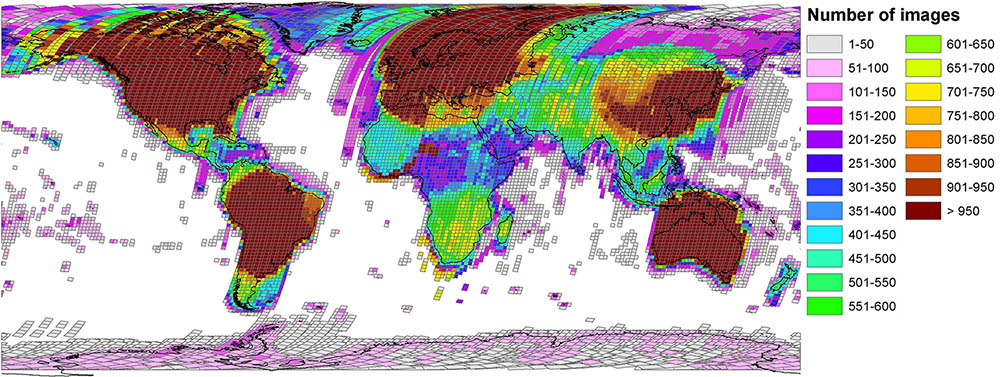
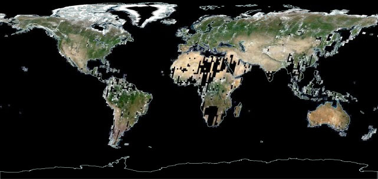
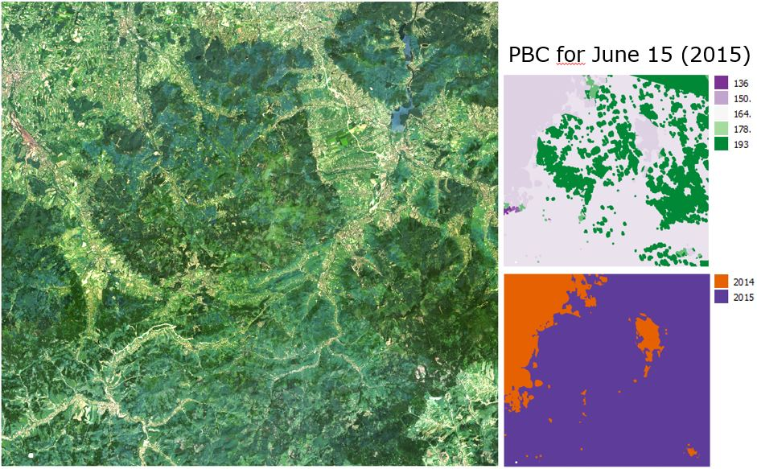

Hello!

About Earth Observation
Earth Observation is an advanced course for students of the Master of Science “Global Change Geography” of Humboldt-Universität zu Berlin. In this course, we cover multiple aspects of optical remote sensing by working with multi-sprectral Landsat and Sentinel 2 imagery. The course is fully based on open source software, including R and QGIS.
Learning goals & course contents
The main goal of this course is to provide you with the necessary knowledge and tools for using optical remote sensing datasets and methods in the geo-scientific context. We want you to enhance your ability of problem-solving, empowering you to perform research independently. To that end, we cover aspects of data acquisition, spatial data handling in R and QGIS, basics of image pre-processing, higher-level processing such as pixel-based compositing and time-series binning. The course contents are related to our lab´s research foci, both in terms of methods and study regions. You may want to check out our publications, current projects, or have a look at this example.
In the course you will learn about current state-of-the-art methods in image processing and time series analyses of optical satellite imagery. The course covers methods related to data quality, cloud masking, vegetation indices, multi-temporal image analyses, machine learning classification algorithms, area adjusted accuracy assessment, time series analyses, and image compositing. We use these methods for mapping of forest types, forest cover changes, agricultural dynamics in the Carpathian ecoregion (Poland), the Southern Brazilian Amazon, and Crete in Greece.
Requirements
A good understanding of basic principles of remote sensing is needed to follow this course. Participants should furthermore have a basic understanding of R, including syntax, data types and knowledge on how to read, manipulate and write data. As you followed the curriculum of the MSc program, you most likely joined the module “Quantitative Methods for Geographers”, in which you learned using R for statistical problems. Here, we built on your existing knowledge. If you are not enrolled in the MSc program, feel free to look at the course materials.
Alternatively, you may want to follow one of the numerous tutorials for R fundamentals (e.g., RStudio, DataCamp, UMC Utrecht, Advanced R by Hadley Wickham, R Graphics Cookbook), or one of those specifically for geodata processing (e.g., Wageningen University, University of Colorado).
Introducing R
Why do we use R?
R is a programming language and open source software environment for statistical computing and graphics. The R language is widely used among statisticians and data miners for developing statistical software and data analysis. It was developed by Ross Ihaka and Robert Gentleman at the University of Auckland, New Zealand. The name R originates the first names of the two authors and refers to the programming language S. The project was conceived in 1992, with an initial version released in 1995 and a stable beta version in 2000.
Learning R has tons of advantages. It is a great starting point for those eager to learn programming. R offers increasingly specialized tools for data wrangling, statistical analyses, and visualization. The CRAN package repository currently features >13,000 packages serving a variety of purposes, e.g. data manipulation (tidyr, dplyr, caret), visualization (ggplot2, ggmap, rasterVis), and geodata handling (raster, rgdal, sp, sf). You will notice that a huge share of figures in scientific publications was produced using R. The R community is huge, and offers great support. R is extremely popular in science & industry, so a proficiency in R opens a wide array of job opportunities. Everything is free and open source.

A rising tide for R (Tipman 2015; doi: 10.1038/517109a)
Coding style
A few basic rules apply to coding in R. Here is a short summary of Hadley Wickham´s style guide:
- Regularly save your progress.
Script names should be meaningful and end in ‘.R’.
- Comment (#) your code & separate it into readable chunks.
Try to limit your code to 80 characters per line.
- Variable and function names should be lowercase.
Variable names should be nouns and function names verbs.
- Place spaces around operators (=, +, -, <-, etc.) and after commas.
Use <-, not =, for assignment.
An example:
######################################################
# Creating random data and a correlated response
# Philippe Rufin, 2019
# Load all required packages
library(ggplot2)
# Create random data
x <- runif(50, 0, 2)
# Build function to simulate response
create.response <- function(x){x + rnorm(50, 0, 0.2)}
# Apply function to random data
y <- create.response(x)
# Make a dataframe
data <- data.frame('x' = x, 'y' = y)
# Plot the simulated dataset
ggplot(data, aes(x = x, y = y)) +
geom_point()
# Investigate correlation in the data
cor(data$x, data$y)[1] 0.9346357Help!
If you get stuck, there are plenty of things you can do:
- Seek the function´s help page (i.e. highlight the function and hit F1)
- Search your problem or error message
- Ask your colleagues
- Use the moodle course forum
- Check forums (e.g., StackOverflow)
Course materials
Readings
The first sessions of the course contain reading materials, such as are peer-reviewed papers and technical reports. You will find the reading materials for the next session at the end of each session. We highlight aspects to focus upon to streamline the reading process and facilitate the discussion. We are looking forward to lively discussions of the reading materials and critical questions from your end.
Data
All data used in the course is openly accessible. Mostly, we´ll be working with Landsat images, which you can access through the USGS Earth Explorer. We provide download links to the datasets for each session. It will be helpful if you organize your data in a course directory on your local machine (MSc students might want to use drive O:/Student_Data/your_name/EO/). We will refer to this folder as course.dir throughout this course. Create subdirectories for each session, e.g. course.dir/S01/ and separate data, code and course materials in additional sub-directories (e.g. /data, /code, /docs).
Exercises
The weekly exercises are defined in the respective session. Each session comprises several tasks that involve scipting in R. Course participants must submit completed exercises, documented as R scripts, in moodle to pass. Weekly submission deadlines are every sunday, 23:59. Please name the script of your work group as SXX_name1_name2.R, e.g. S01_ernst_rufin.R. Please structure your script for every exercise as follows:
#############################################################################
# MSc Earth Observation Exercise [Session number]
# [Your Name]
#############################################################################
# Load packages, use install.packages('packagename') to install if needed
library(raster)
# Change raster options to store large rasters in temp files on disk
rasterOptions(maxmemory = 1e6)
# Define the folder that contains your data...
data.dir <- 'course.dir/S01/data/'
#############################################################################
# 1)
#############################################################################
# Comments for task 1
#############################################################################
# 2)
#############################################################################
# ...Session 01: Handling rasters in R
Learning goals
In this session, you will
- Acquire multi-spectral satellite data
- Read & write raster data
- Manipulate the spatial extent of rasters
- Extract cell values & plot a spectral profile
The raster package
It´s great, as it facilitates raster data handling. It allows us to access file characteristics before loading data into memory, facilitates handling of coordinate reference systems and spatial extents. We can use it to perform raster algebra, to combine raster and vector datasets (e.g. ESRI shapefiles), or to convert raster files into matrices, which are compatible with the base functions to access image statistics, develop models, slice data dimensions etc.
There are a couple of things that the raster package does not provide. For example, advanced visualization of spatial datasets and manual operations, such collecting training or validation data, are preferably done in a GIS environment (e.g. QGIS). Furthermore, processing large data volumes in R can be quite time-consuming (we often use Python instead, it´s syntax is quite similar to R).
You install the raster package just like any other package in R. Dependencies will automatically be installed. On some machines, you might need to install rgdal manually.
# Install the raster and rgdal packages
install.packages('raster')
install.packages('rgdal')
# Load the package
library(raster)Exercise
1) Data acquisition
Let´s get some Landsat data. Visit the USGS Earth Explorer and use the Adress/Place field to navigate to Wisła, Poland (lat,lon: 49.6473,18.8677). Switch to the ‘Data Sets’ tab and select Landsat -> Landsat Collection 1 Level-1. Tick the ‘Landsat 8 OLI/TIRS C1 Level 1’ box and click on ‘Results >>’.
You´ll get several hundreds of results, so let´s narrow down the search. Under ‘Search Criteria’, define an acquisition date range between February 2014 and August 2014. Switch to the ‘Additional Criteria’ tab. Let´s choose a scene cloud cover of ‘Less than 40%’, and select the ‘Tier 1’ category.
Find the following images:
- LC08_L1TP_189025_20140716_20170421_01_T1
- LC08_L1TP_189025_20140310_20170425_01_T1
Check this website to get an overview of the Landsat Collection 1 file naming convention (product identifiers) and further information such as processing levels.
Visualize the images in the Earth Explorer interface by clicking on the small image icon. For downloading the data, you will need an EarthExplorer account. You may register and download the .tar.gz files. If you prefer not to register, you can download the files from our repository. Unpack the files in your session directory.
2) Reading data
Today, you will make use of R´s raster package classes and functions which are well described in the package documentation. Get acquainted with the following classes and functions and find out what they are useful for: raster(), stack() ,extent(), crop(), extract(), CRS(), projectRaster(), plotRGB(), writeRaster()
Visit the folder containing the unpacked Landsat image. Did you take a close look at the Landsat file naming convention? Practically, it provides some basic meta-information. For instance, LC08_L1TP_189025_20140310_20170425_01_T1 is a sequence of information on the sensor, processing level, WRS path and row, acquisition date, processing date, collection, and collection tier, separated by ’_’.
As you can see, the Landsat images are delivered as single-band files. The single bands should be stacked for further analyses. For stacking, all input files must have matching extents and the identical projection. Create a stack for each of the two Landsat 8 images.
Important: Please include only the following bands: blue, green, red, near infrared, shortwave infrared 1, shortwave infrared 2 (in this order). Check the list of Landsat spectral bands for a recap. Always keep the band designations in mind, as this can cause confusion, e.g. when combining Landsat 5 and Landsat 8 data.

Band designations for Landsat satellites
Try to create the two stacks with a minimum amount of code as possible! Consider using helper functions such as paste0(), dir() or list.files().
3) Manipulating data
Investigate the stack. In which projection is the data delivered?
Compare the extent of the two images. You will notice that they vary. Trying to stack images of different extent will cause an error message claiming:
image.stack <- stack(image.one, image.two)
Error in compareRaster(x) : different extentTo stack both images, we need to crop (i.e. clip, or cut) the images to their common extent. Find an efficient way to identify the common extent of the images, defined as common.extent <- c(xmin, xmax, ymin, ymax) (in projected coordinates).

Identifying the common extent of several images
The common extent of the two images is pretty large. In order to reduce the amount of data for the next steps, we should crop the images to our region of interest, a part of the Western Beskids, defined by roi.extent <- c(327945, 380325, 5472105, 5521095)
4) Writing data
Write the cropped stacks to your folder using writeRaster(). Use the GTiff format and the appropriate datatype. Why is this important?
5) Visualizing data
Open the cropped images in QGIS. Seek the symbology to create a true-color (red, green, blue) and a false-color representation (e.g., RGB: swIR1, nIR, red) of each image. Make sure to properly consider the order of bands in your stack (blue, green, red, nIR, swIR 1, swIR 2) in relation to your computer screen´s color channels (RGB).
Use the plotRGB() function in R to create another false-color visualization of the images in R.

False color visualization (RGB: nIR, red, green)
6) Extracting spectral profiles
Use the extract() function to get spectral profiles from both images. Use the following coordinate:
coordinate <- data.frame('x' = 355623, 'y' = 5486216).
Visualize the results in R. Can you create one plot that shows two spectral profiles (one for each image in the stack), while accounting for the band wavelength and acquisition date? Can you guess what type of surface we are looking at?

Spectral profiles for two observation dates
Reading materials
In the next session, we would like to discuss the following paper:
This is a rather technical reading, which introduces the Fmask algorithm for automated cloud and cloud shadow detection. It has been widely used for cloud detection on Landsat TM and ETM+ data, and was enhanced for the use with Landsat OLI and Sentinel 2 data (documented in Zhu et al. 2015).
While reading focus on the following broad questions:
- Why do we need automated cloud masking?
- How does it work in principle?
- Where are the limitations?
More specifically, think about the following:
- How were the thresholds for spectral tests derived?
- How will different error types impact further analyses?
Session 02: From DNs to TOA
Learning goals
- Convert digital number values to top-of-atmosphere reflectance
- Compare top-of-atmosphere reflectance to surface reflectance
What is radiance / what are DNs?
This session is the most technical of the entire course. Today we will be dealing with physical units, conversion, and data quality. Let´s kick it off with a short recap. Towards the end of the last exercise, you produced a plot of measurements in the different bands of a Landsat image, similar to this one:
Spectral profiles extracted from a Landsat Level 1 image
Our y-axis label was “DN”, or digital number. Now, what is that again? Earth observing sensors, such as the ones on board the Landsat satellites register radiance at the top of the atmosphere. Radiance is expressed in watt per steradian per square meter.
Storing data in radiance units is difficult and therefore sensors translate measured radiance into DNs. Therefore, the range of energy measured by the sensor is broken into distinct units (DNs). Sensor-specific calibration determines the minimum and maximum amount of radiance that can be measured. DNs express the amount of radiance in relation to these sensor-specific calibration coefficients. The total number of possible DNs is what we refer to as the radiometric resolution of the sensor.
As an example, Landsat 4, 5, and 7 worked with a radiometric resolution of 8 bit. This allows for 2^8, or 255 distinct DNs values. Landsat 8 works with 12 bit radiometric resolution, which is artificially quantized to 16 bit. The 16 bit resolution can represent much more different grey shades, exactly 2^16, or 65,536 values. Let´s put this into code.
library(raster)
# Define the number of bits
bit <- 4
# How many grey tones can we represent given bit?
print(paste0(bit, ' bits produce ', 2^bit, ' grey tones.'))[1] "4 bits produce 16 grey tones."# Create a raster with one line and 2^bit columns,
# whereas cell values are filled with a vector of numbers from 1 2^bit
r <- raster(nrows = 1, ncols = 2^bit, vals = c(1:2^bit))
# Plot the image and assign grey-scale values to the cells
image(r, col = grey.colors(2^bit, start = 0, end = 1), main = paste0(bit, " bit raster"))
DNs to TOA
As DNs are dependent on the sensor calibration, identical measurements yield differing DNs across sensors. DNs are physically not meaningful. Instead of DNs, often we are interested in reflectance. Reflectance expresses the fraction of reflected radiance relative to the total incoming energy (sun), and is scaled between 0 and 1. Many applications require data converted to reflectance and/or corrected for the influence of the atmosphere.
- Sensor calibration (DN to radiance)
- Conversion to top-of-atmosphere reflectance (radiance to TOA)
- Atmospheric correction yielding bottom-of-atmosphere reflectance (TOA to BOA, or surface reflectance)
A conversion of DNs into radiance can be easily undertaken. By accounting for sun-sensor geometries and solar irradiance, we can easily infer top-of-atmosphere reflectance (TOA) from radiance. This facilitates, e.g., a comparison of measurements from different sensors.
Practically, this involves a linear scaling of the DN values which uses two band-specific rescaling factors. One is multiplicative, one is additive. Formulas are explained in the USGS guide for conversion to TOA Reflectance. With Landsat 8 Collection 1 data, we can use a single set of coefficients to convert DNs to TOA reflectance. Note that this is not the case for all sensors.
\(ρλ' = M_ρ * Q_{cal} + A_ρ\)
where
\(ρλ'\) = TOA planetary reflectance, without correction for solar angle.
\(M_ρ\) = Band-specific multiplicative rescaling factor from the metadata.
\(Q_{cal}\) = Quantized and calibrated standard product pixel values (DN).
\(A_ρ\) = Band-specific additive rescaling factor from the metadata.
In a next step, we can correct for solar angle during image acquisition.
\(ρλ = ρλ' / cos(θ_{SZ}) = ρλ' / sin(θ_{SE})\)
where
\(ρλ\) = TOA planetary reflectance corrected for solar angle.
\(θ_{SZ}\) = Local solar zenith angle, whereas \(θ_{SZ} = 90° - θ_{SE}\).
\(θ_{SE}\) = Local sun elevation angle.
TOA to BOA
A final step towards comparable measurements of the Earth surface is the atmospheric correction. By doing atmospheric correction, we (theoretically) eliminate the influence of the atmosphere. We therefore call the product “surface reflectance” or “bottom of atmosphere reflectance” (BOA). Theoretically, the space-borne sensor´s measurements should be identical to ground-based measurements.
Exercise
During this exercise you will learn how to convert Landsat-8 Collection 1 DNs to TOA reflectance, and compare and characterize spectral appearance of different land cover types in TOA and BOA imagery. The data are provided in our repository. After unpacking, you find the following folders:
DN/LC08_L1TP_189025_20141105_20170417_01_T1/ - the directory containing the “L1TP” Landsat product (i.e. terrain-corrected (“orthorectified”) data in DNs), including the metadata file (MTL.txt) and the Quality Band (BQA.tif) which contains information on radiometric saturation, clouds, cloud shadows and more.
SR/LC081890252014110501T1-SC20170927102137/ – the directory containing Level-2 data, i.e. atmospherically corrected, or bottom-of-atmosphere data.
1) DN to TOA conversion
Familiarize yourself with the L1TP data. Visualize individual bands, have a look at the Level-1 metadata file (LC08_L1TP_ XXX_MTL.txt) and the information provided within. Again, we only use the six reflective bands of the OLI sensor in this exercise (3xVIS, nIR, 2xswIR)
Read the Landsat metadata file in R using read.delim() and extract the necessary information for the top-of-atmosphere conversion: - REFLECTANCE_MULT_BAND - REFLECTANCE_ADD_BAND - SUN_ELEVATION
Use the pattern matching function grep() to find the corresponding entries in the metadata file and store them as numeric vectors. Do this as follows:
# Define the folder that contains your data...
path <- 'course.dir/S02/data/DN'
# Read MTL file
mtl <- list.files(data.path, pattern="MTL.txt$", recursive=T, full.names=T)
mtl.txt <- read.delim(mtl, sep = '=', stringsAsFactors = F)
# Extract numeric values
REFLECTANCE_MULT_BAND <- as.numeric(mtl.txt[grep("REFLECTANCE_MULT_BAND",mtl.txt$GROUP),][2:7,2])Convert the DN values to TOA following the “Conversion to TOA Reflectance” section in the USGS guide for conversion to TOA Reflectance. Important things to keep in mind:
- You can apply the conversion to all bands in a stack simultaneously.
- The Landsat data is provided as integer values. When applying the equation, the data will be cast to float. You will have to re-convert to integer at some point. Use a reflectance scaling factor of 10,000 during the conversion.
- The sun elevation angle provided in the metadata file is reported in degrees. The
sin()function expects that angles are provided in radians. For the conversion to work correctly, you need to convertSUN_ELEVATIONinto radians. Make use of this helper function:
# Helper-function to convert degrees to radians
deg2rad <- function(deg){ (deg * pi) / (180) }Write the result of your TOA conversion to disk in the GTiff format. Make sure to use an integer data type to save disk space.
2) Compare TOA with BOA
Open the BOA and the TOA file in QGIS and visually assess the differences in the spectral signature between the SR and TOA files. Use the info tool´s graph view to investigate the spectral signatures of each of the following land cover types:
- Deciduous forest
- Coniferous forest
- Grassland
- Cropland
- Impervious surfaces
- Water
In your R script, take notes on the following questions:
What are the most evident differences between TOA and SR reflectance spectra?
Briefly summarize the spectral appearance of the six land cover types, and the main difference between the TOA and SR.
Session 02: Data quality & cloud masking
Learning goals
- Understand how to use the Landsat Collection 1 quality bands
- Produce cloud / cloud shadow masks of differing confidence levels
- Mask Landsat images
Landsat data quality
Think about the following question and exchange with your neighbor: Which issues affect the data quality of optical satellite images?
How to find out if a pixel is affected by any of these issues? Luckily, the USGS provides quality bands for the Landsat Collection 1 products. If we look up the Landsat QA band website to find out what this band contains, we find the following information:
“Each pixel in the QA band contains unsigned integers that represent bit-packed combinations of surface, atmospheric, and sensor conditions that can affect the overall usefulness of a given pixel.”
False-color representation of a cloudy Landsat Level 1 image (left) and a grey-scale visualization of the Landsat QA band (right)
In the following, you will learn to understand what that means. Please read this section carefully and exchange with your neighbor.
The binary system
Remember the binary numeral system (0 / FALSE or 1 / TRUE)?

The binary number system. Source: Wikipedia
The binary system represents numbers through sequences of bits. Each bit has a position and a state. The positions are numbered from 0 to the total number of bits, read from right to left. The state of a bit can be either, 0, or 1. Consider the meaning of 0 as „FALSE“ or „NO“, 1 equals „TRUE“ or „YES“.
In the example above, five bit positions are given. Each position is sequentially numbered, starting with 0, read from right to left. By calculating 2 to the power of the bit position, we receive the value of each bit. For all bits with the value 1, we sum the respective values. Different combinations of states and positions therefore enable us to represent integer numbers.
The more positions or bits we have the higher numbers we can generate. With 5 bits, we can represent the numbers 0 – 31 (32 unique values), with 16 bits, we can represent the numbers 0 - 65,535 (65,536 unique values). Following the example with 5 bits, we can for instance represent these numbers:
# 00001
0 * 2^4 + 0 * 2^3 + 0 * 2^2 + 0 * 2^1 + 1 * 2^0[1] 1# 00111
0 * 2^4 + 0 * 2^3 + 1 * 2^2 + 1 * 2^1 + 1 * 2^0[1] 7# 11111
1 * 2^4 + 1 * 2^3 + 1 * 2^2 + 1 * 2^1 + 1 * 2^0[1] 31Landsat QA band
The Landsat QA band is coded in 16 bit, which are arranged from right to left. Each bit has a specific meaning in terms of data quality e.g. bit 4 (or position 5 from the right) means „cloud“. If bit 4 has the state 1 (or”YES“, or”TRUE“), there was a cloud detected in that pixel. If bit 4 has the state 1, the resulting integer value will be 2^4 = 16. Following this logic, different combinations of true / false conditions result in different integer values.
Landsat QA band bit designation
In the Landsat QA band, there are furthermore single and double bits. Single bits inform about one condition in a binary manner:
Single bits (0, 1, and 4): - 0 = “No” = This condition does not exist - 1 = “Yes” = This condition exists
Double bits can represent conditions in more detail. Some double bits (5-6, 7-8, 9-10, 11-12, read from left to right) represent levels of confidence that a condition exists:
- 00 = “Not Determined” / This condition does not exist
- 01 = “Low” = Algorithm has low to no confidence that this condition exists (0-33 percent confidence)
- 10 = “Medium” = Algorithm has medium confidence that this condition exists (34-66 percent confidence)
- 11 = “High” = Algorithm has high confidence that this condition exists (67-100 percent confidence)
The radiometric saturation bits (2-3), read from left to right, represent how many bands contain radiometric saturation:
- 00 - No bands contain saturation
- 01 - 1-2 bands contain saturation
- 10 - 3-4 bands contain saturation
- 11 - 5 or more bands contain saturation
De-coding quality band values
Let´s look at the integer value 2804 to illustrate how this works. R offers a good way of dealing with bit-packed information. The intToBits() function converts integer numbers into sequences of bits, whereas 32 double-digit bits are returned by default.
# Convert integer to bit sequence
intToBits(2804) [1] 00 00 01 00 01 01 01 01 00 01 00 01 00 00 00 00 00 00 00 00 00 00 00
[24] 00 00 00 00 00 00 00 00 00# Convert the double-digit into single-digit bits
as.numeric(intToBits(2804)) [1] 0 0 1 0 1 1 1 1 0 1 0 1 0 0 0 0 0 0 0 0 0 0 0 0 0 0 0 0 0 0 0 0# We´re looking at 16 bit data, so let´s deprecate the unused bits
as.numeric(intToBits(2804)[1:16]) [1] 0 0 1 0 1 1 1 1 0 1 0 1 0 0 0 0# Bit sequences are read from right to left, so we need to reverse the order
rev(as.numeric(intToBits(2804)[1:16])) [1] 0 0 0 0 1 0 1 0 1 1 1 1 0 1 0 0Now we can compare with the Landsat 8 Collection 1 Level 1 QA band bit designation. What´s the pixel quality information of the integer value 2804?
Landsat QA band bit designation
We are looking at a cloudy pixel with radiometric saturation affecting 1-2 bands.
Exercise
1) Investigating the QA band
Let´s have a look at the Landsat Collection 1 Quality Band (BQA). First, load the BQA band and find the three most frequent values using freq().
As you can see, the band contains integer values. By decoding the integer values into 16 bit binary strings, we can read the quality information for each pixel. Use the intToBits() function to decode the three most frequent BQA values and decipher their meaning using the Landsat quality band documentation. intToBits() returns 32 bits by default. Make sure you only look at bits 1 to 16. Also, keep in mind the right-to-left order when comparing the decoded bits with the table. You might want to use rev() to invert the order of the outputs by intToBits(). Note your findings as a comment in the script:
# What do the most frequent values mean? Decode each integer value into bits and
# describe their meaning here:
# Most frequent value:
# Second most frequent value:
# Third most frequent value: 2) Creating a cloud mask
By converting integer values into binary bits, we can extract specific attributes from the BQA. Let´s to this in a systematic manner by defining a function, which yields TRUE for binary codes with bit 0 = 1:
# Define function to find fill values from Landsat BQA
fill_pixels <- function(x) {intToBits(x)[1] == T}Next, use indexing and Boolean expressions to define functions which return TRUE for
- high confidence clouds or high confidence cloud shadows or fill values
- high and medium confidence clouds or high and medium confidence cloud shadows or fill values
Create a mask using the above functions. You can use calc(). Plot the mask and check if clouds, cloud shadows, and fill values are labeled as 1 and clear observations as 0. Write both masks to disk.
Open both masks in QGIS, together with an RGB representation of the image. Which mask is more accurate?
3) Masking images
Next, load the BOA data as a stack (VIS, nIR, swIR) and use the mask() function to mask clouds, cloud shadows and fill values from the image. Use the mask which you found to be more accurate. Make sure to specify the maskvalue argument accordingly. Write the masked BOA stack to disk in the GTiff format.
Reading materials
In the next session, we would like to discuss the following paper:
In this paper, a long time series of Landsat image composites at five year intervals is used to study the dynamics of forest disturbance, recovery and changes in forest types across the Carpathian ecoregion. Please make sure to read the paper thoroughly and focus on the following broad questions:
- What is the motivation for this article?
- How was it done in principle?
- What are the key findings?
- Are there uncertainties related to the findings?
Session 03: Vegetation indices and data transforms
Learning goals
- Learn how to calculate NDVI, EVI and Tasseled Cap components
Spectral behavior of vegetation
Vegetation produces a distinct spectral reflectance pattern due to its leaf and cell structure, its physiognomy, and complex stand structure. Photosynthetically inactive plant parts differ considerably from active ones across different wavelength regions. The reflectance of photosynthetically active vegetation is characterized by different factors in the VIS, nIR and SWIR:
VIS – leaf pigments - In the visible bands the reflectance is relatively low as the majority of light is absorbed by the leaf pigments. Chlorophyll strongly absorbs energy in the blue and red wavelengths and reflects more in the green parts of the spectrum. This is why healthy vegetation appears green to the human eye.
nIR – cell structure - For healthy vegetation, the reflectance is much higher in the near infrared (NIR) region than in the visible region due to the cellular structure of the leaves, specifically the spongy mesophyll. Therefore healthy vegetation can be easily identified by the high NIR reflectance and generally low visible reflectance.
SWIR – water content - The reflectance in the shortwave infrared wavelengths is related to the water content of the vegetation and its structure. Water has strong absorption around 1.45, 1.95 and 2.50 µm . Outside these absorption bands in the SWIR region, reflectance of leaves generally increases when water content in the leaf decreases.
Spectral reflectance curve of vegetation. Source: gsp.humboldt.edu
Vegetation indices
Vegetation indices make use of this particular reflectance signal. Most commonly known are the Normalized Difference Vegetation Index (NDVI) and the Enhanced Vegetation Index (EVI).
Normalized Difference Vegetation Index (NDVI)
The NDVI relates the difference between the nIR and red reflectance to their sum.
\(NDVI = (nIR – red) / (nIR + red)\)
For instance, a red reflectance of 10% and a nIR reflectance of 50% result in
red <- 0.1
nIR <- 0.5
ndvi <- (nIR - red) / (nIR + red)
print(ndvi)[1] 0.6666667The NDVI is not a physical measure, but a proxy integrating different factors, such as land use / cover, incl. the amount of background signal visible in a pixel, photosynthetic activity, vitality and overall vegetation condition. It relates well to vegetation density and structure, e.g., represented by the leaf area index (LAI)
Enhanced Vegetation Index (EVI)
The EVI often has a better correlation with biomass than NDVI, specifically in vegetation canopies with low and high LAI values.
NDVI and EVI from MODIS image composites (5-20 March 2000). Source: http://earthobservatory.nasa.gov/
\(EVI = G * ((nIR – red) / (nIR + (C1 * red – C2 * blue) + L))\)
The EVI aims at reducing saturation effects which are common for NDVI. It includes a correction for soil background effects (L) to improve sensitivity for low density vegetation canopies. It is less sensitive to high aerosol loads, since the additional coefficients (C1 and C2) steer the aerosol resistance term, and the visible blue reflectance is used to correct for scattering that also affects the visible red.
Indices enhance differences in the reflectance to highlight certain features. Vegetation indices have the advantage of being simple, but the disadvantage of disregarding parts of the spectral feature space. Linear transformations, such as the Tasseled Cap Transformation, can help to overcome this limitation.
Tasseled Cap Transformation
The Tasseled Cap Transformation (TC) is a linear transformation of the Landsat spectral bands. It was first presented in 1976 by R.J. Kauth and G.S. Thomas of Environmental Research Institute of Michigan in an article titled “The Tasseled Cap – A Graphic Description of the Spectral-Temporal Development of Agricultural Crops as Seen by Landsat.” The TC was thus developed for analyzing agricultural lands with Landsat MSS data. The name „Tasseled Cap“ was chosen because the of the shape of phenological trajectories of crops in the nIR ~ red feature space.
Crop phenological trajectories in near infrared ~ red featurespace. Band numbers relate to Landsat MSS bands, where band 3 (6) is the near infrared and band 2 (5) is the red band.
We can observe these trajectories by producing near infrared ~ red scatterplots for different points in time.
Animated scatterplot of 10,000 locations of an agricultural system in southeastern Turkey in near infrared ~ red featurespace, observed within the course of one year (2015).
The concept was further developed for the use with other sensors, including Landsat TM, ETM+ and OLI. It is still widely used for different applications in the context of urban, agricultural, or forest-related remote-sensing studies. Resulting from the TC, we mostly analyze three components called Brightness, Greenness, and Wetness:
- Brightness: an axis along the line of soils, indicating soil brightness.
- Greenness: axis is perpendicular to the soil line, emphasizes near infrared and hence vegetation.
- Wetness: emphasizes shortwave infrared and is thereby related to water content.
Exercise
We provide the following datasets in our repository:
…sr_data/: Four cloud-masked image chips from Landsat 8 (surface reflectance):
- LC081890252014031001T1-SC20170927101754 (10 March 2014)
- LC081890252014071601T1-SC20171024094741 (16 July 2014)
- LC081890252015082001T1-SC20170927120710 (20 August 2015)
- LC081890252014110501T1-SC20170927102137 (05 November 2014)
1) Compute vegetation indices
Read the March surface reflectance stack in R and calculate NDVI as well as EVI. The correction factors for calculating EVI from Landsat data are:
\(G = 2.5\)
\(C1 = 6\)
\(C2 = 7.5\), and
\(L = 1\).
Always be aware that the reflectance values in our datasets is scaled by 10,000. This will not make a difference when computing the NDVI, as we are only looking at relative differences. However, for the EVI, \(L\) must be scaled by 10,000. Also, keep in mind that we commonly want to store datasets in INT2S data type, and therefore we need to scale our results by 10,000. Consequently, we compute the EVI from Landsat data as follows:
evi <- 2.5 * ((nIR – red) / (nIR + 6 * red – 7.5 * blue + 10000))
While the computation is ongoing, proceed with preparing the code for the next task. When the computation is done, write the results to disk, using the INT2S data type.
2) Perform a Tasseled Cap transformation
Perform the TC using the March surface reflectance stack. We use the coefficients derived by Crist (1985).
tcc <- matrix(c( 0.2043, 0.4158, 0.5524, 0.5741, 0.3124, 0.2303,
-0.1603, -0.2819, -0.4934, 0.7940, -0.0002, -0.1446,
0.0315, 0.2021, 0.3102, 0.1594, -0.6806, -0.6109),
dimnames = list(c('blue', 'green', 'red', 'nIR', 'swIR1', 'swIR2'), c('brightness', 'greenness', 'wetness')),
ncol = 3)
print(tcc) brightness greenness wetness
blue 0.2043 -0.1603 0.0315
green 0.4158 -0.2819 0.2021
red 0.5524 -0.4934 0.3102
nIR 0.5741 0.7940 0.1594
swIR1 0.3124 -0.0002 -0.6806
swIR2 0.2303 -0.1446 -0.6109The TC is a linear band transformation. We can simply multiply the individual bands in the march stack with the corresponding factor and sum up the result, e.g., for TC Brightness:
brightness <- march.stack[[1]] * tcc[1,1] +
march.stack[[2]] * tcc[2,1] +
march.stack[[3]] * tcc[3,1] +
march.stack[[4]] * tcc[4,1] +
march.stack[[5]] * tcc[5,1] +
march.stack[[6]] * tcc[6,1]Make sure to create an individual layer for Brightness, Greenness, and Wetness. Create a stack from the three layers. While the computation is ongoing, proceed with task 1) of the block on training data collection.
When the computation is completed, write the results to disk, using the INT2S data type. Add the NDVI, EVI, and the TC stack to the QGIS project you started in the next block. Visually explore the vegetation indices and TC components.
Session 03: Training data collection
Learning goals
- Gather training data for a broad forest type classification
- Understand how forest types differ spectrally
Background
Collecting training is an essential step on your way to a classified map. The training pixels will be considered representative for the classes you want to map, as classification algorithms determine class labels for unknown pixels based on their similarity to the training dataset.
Training points for forest type classification and resulting map output
Collecting training data is time consuming, regardless if you are collecting in the field or digitally. Small conceptual mistakes may require a revision of your training dataset. As a consequence, training data collection should be well prepared. Consider the following points.
A precise and robust definition of your target classes based on the study region characteristics is key. Targeting a high thematic detail is beneficial, but spectral(-temporal) similarities between classes might pose limitations to a robust distinction of classes, such as tree species or crop types. In such cases, it is advised to think about a hierarchical structure to aggregate similar classes into higher level classes, such as forest types, or annual / perennial croplands.
Gathering as much reference information as possible. Can we find additional datasets that guide our interpretation? Is any very high resolution (VHR) imagery available? GoogleEarth is a valuable source of VHR imagery, but it is critical to account for the exact acquisition date.
Good knowledge of the target classes, and their spectral (temporal) characteristics in the study region is beneficial. We should consider spectrally similar classes and identify potential ways to prevent confusion, e.g., by aggregating those classes or identifying spectral features which help to separate them better.
A purely random point sampling is not neccessarily the best option (different from collecting independent validation data), as we might want to train small classes that are hardly captured by a random sample. Manual selection of training points is advised to circumvent this problem.
The image below shows the spatial distribution of six training datasets collected during an earlier iteration of the course. Some training points cluster in a subset of the study region. Ideally, however, training data should be well distributed across the study region to cover regional biophysical variability, such as different soil types, weather patterns, or topography.
Spatial distribution of six training datasets
The classification algorithm of your choice might have specific requirements towards the training data, e.g., concerning the number of samples, their distribution in the spectral feature space, or their purity (pure vs. mixed pixel). We discuss these aspects later in the course.
In practice, it´s important to know your training data well. Are the classes separable with the data at hand? Are essential class characteristics well represented? Are there any outliers? To learn more, it is always wise to explore the spectral characteristics of your training data points. We can do this through investigating the spectral reflectances at our training data locations (e.g., through histograms / boxplots) and comparing them between classes. That´s what we want to do today.
Exercise
This exercise has two larger aims. First, you will learn to collect training data for a broad forest type classification. We provide forestry data to find representative sample pixels in QGIS. We will use the data you generate in this exercise for classification in the next session. Second, you will learn how the broad forest types appear spectrally in images acquired in different parts of the growing season.
We provide the following datasets in our repository:
…sr_data/: Four cloud-masked image chips from Landsat 8 (surface reflectance):
- LC081890252014031001T1-SC20170927101754 (10 March 2014)
- LC081890252014071601T1-SC20171024094741 (16 July 2014)
- LC081890252015082001T1-SC20170927120710 (20 August 2015)
- LC081890252014110501T1-SC20170927102137 (05 November 2014)
…vector/: A shapefile and a *.kmz file for GoogleEarth, which will help you to accurately delineate the Landsat pixel locations and extents for training data collection.
…BDL/: Forestry data collected in 2015 which is publicly available here. We prepared a shapefile for the use in this session.
It contains the following attributes:
| Attribute field | Definition | Class |
|---|---|---|
| species_en | Dominant genus in each stand | Ash, Beech, Fir, Spruce… |
| part_cd | Share of this genus within the stand | 0 – 100 (in %) |
| spec_age | Average age of the trees in this stand | Age in years |
1) Prepare the training data collection
Visualize and arrange all abovementioned datasets in QGIS. Ask us for help if you´re not familiar with QGIS. Consider the following steps:
Find a good false-color representation of the Landsat 8 bands to highlight vegetation.
Visualize the forestry data by choosing distinct colors for the different tree genera (species_en).
Which genera are dominant in the study area?
Generate a new point shapefile for storing the training data you will collect in the next task. It should contain the attribute fields ‘classID’ and ‘confID’ (both of type integer).
Watch out - make sure the shapefile has the same spatial reference system as the Landsat data.
2) Collect training data
Switch into the editing mode to locate training points and assign the corresponding class and confidence number. Please collect at least 15 pixels per class and assign them the class numbers and confidence numbers given below.
| Class name | classID | Confidence level | confID |
|---|---|---|---|
| Deciduous forest | 1 | Very certain | 1 |
| Mixed forest | 2 | Some uncertainties | 2 |
| Coniferous forest | 3 | Very uncertain | 3 |
| Non-forest | 4 |
Use the multi-temporal Landsat imagery, the forestry polygons and very high resolution imagery in GoogleEarth to identify training points. The historic imagery tool in Google Earth can be extremely useful to guide your interpretation between deciduous and evergreen trees, as it contains imagery from the leaf-off phenological phase. The Landsat grid shapefile and .kmz will help you to identify and label the precise training locations for the four classes.
Regularly save the collected points and store the final shapefile with 60+ points in your course folder.
3) Explore your training data
Load your shape in R using readOGR(). Extract the spectral values at your point locations from the March image in R using the extract() function. Specify sp = TRUE to append the spectral values to the point shapefile.
Make sure the result of this task is an object of type data.frame named sr.march. Your sample points should be represented as rows and the measured variables as columns (i.e. point id, classID, confID, and 6 spectral bands).
Create boxplots of your surface reflectance measurements for all spectral bands, grouped according to the class number.
# Load required packages
library(ggplot2)
library(reshape2)
# Melt dataframe containing point id, classID, confID, and 6 spectral bands
spectra.df <- melt(sr.march, id.vars=c(1:3), measure.vars=c(4:9))
# Create boxplots of spectral bands per class
ggplot(spectra.df, aes(x=variable, y=value, color=classID)) +
geom_boxplot() Make sure you understand what the melt() function is doing. Feel free to adjust the plot layout.
Similarly to the previous task, extract the values at your point locations from the Tasseled Cap stack. Create boxplots of the three Tasseled Cap components, grouped by the target class. Investigate the boxplots in order to investigate the differences between your target classes. Try to answer the following questions:
- Do the Tasseled Cap components allow for discriminating your target classes?
- Which classes are likely difficult to separate?
Voluntary exercise: If you´re keen on exploring spectral changes over time, repeat the above procedures for the remaining images (July, August, November).
Reading materials
In the next session, we would like to discuss the following paper:
This paper describes the methods used in the article you read last week. Here, a novel algorithm for large-area pixel-based compositing from Landsat data was developed. Please read the paper thoroughly, make sure you understand the underlying concept and write down any question for the discussion in our next session. Also, answer the following broad questions:
- What is the motivation for this article?
- How does the algorithm work in principle?
- Which key parameters were used for the parametric scoring?
- What is the difference between annual and seasonal consistency?
Session 04: Pixel-based compositing
Learning goals
- Understand the fundamentals of pixel-based image compositing
- Parameterize a compositing function and create your own composite from multiple Landsat images
Background:
The availability of Landsat images varies by region. Even in areas where obersvation density is high, such as North America, coverage can be reduced by clouds and quality of observations can be impacted by haze or sensor saturation. 
Using pixel-based-compositing, we can integrate multiple obervations (i.e., from multiple Landsat images) and combine them to one consistent image composite. One of the first global Landsat composites was produced using the WELD compositing approach (Roy et al. 2011, https://doi.org/10.1016/j.rse.2009.08.011). 
Pixel-based compositing allows us to create cloud-free, radiometrically and phenologically consistent image composites that are contiguous over large areas. A set of parameters is used to determine the observations best suited for analysis. These parameters can, e.g., include the distance to clouds in the image, or the temporal proximity to a target day of the year. Defining scoring functions allows for a flexible parametrization according to user´s needs and study area characteristics. Different parameters can also be weighted according to their relevance for a given application.

Creating one pixel-based composite from three images.
Best-pixel-based compositing in seven steps
Determine compositing parameters, e.g. Target DOY: June 15 +/- 30 days and target year: 2015 +/- 1 year
Calculate DOY and year suitability (0-1) according to parameters

Five images to be used for best-pixel compositing and their DOY and year offsets
We use linear functions to determine the suitability of an observation. In the plot for the DOY function below, we’re chosing a parameterization that favors observations closest to the target DOY and assign a suitability score of 0 for observations that are 50 or more days from the target date. Being 30 days from the target DOY, the May 16 2015 observation receives a suitability score of 0.4.
A second function determines the suitability score for the year of observation. Again, observations close to the target year are assigned high values, while observations acquired five or more years from the target year are considered unsuitable. The resulting suitability score for the May 15 2015 observation is 1.
Linear functions for the DOY and year suitability score
- Calculate pixel-level suitability (0-1), e.g. through min. distance to clouds.
Distance to next cloud in pixels
To minimize the likelihood of pixels being affected by clouds, we favor observations further away from clouds. The cloud distance scoring function below assigns a suitability score of 1 as soon as the distance to the next cloud is equal or greater than 100 pixels. An observation that has a distance of 60 pixels (=1800m) to the next cloud receives a cloud distance suitability score of 0.6.
Linear function for the cloud suitability score
- Define which criteria are most important for you (W = weights):
We can weigh the different parameters according to our needs. For instance, by prioritizing the DOY score over the year score.
\[W_{DOY} = 0.5\] \[W_{year} = 0.2\] \[W_{CloudDist} = 0.3\]
- Calculate a score for each pixel in each image. We can use the weighted sum of suitabilities (S = score):
\[score = S_{DOY} * W_{DOY} + S_{Year} * W_{Year} + S_{CloudDist} * W_{CloudDist}\]
Using the values from the example above yields:
\[score = 0.4 * 0.5 + 1 * 0.2 + 0.6 * 0.3\] \[score = 0.58\]
Resulting suitability scores for each image
Use the best observation (= highest score) for each pixel to create the final composite.
Evaluate the results by checking for seasonal/annual consistency and cloud distance (and re-iterate) 
Exercise
The goal of this week’s exercise is to combine several images into best-pixel composites using a parametric compositing function. We provide the data for this exercise in our repository. After unpacking, you will find the following folders:
- sr_data: a total of 43 cloud-masked bottom of atmosphere image chips for our study region, acquired in various seasons, years, and with different degrees of cloud cover.
- cloud_dist: data on the distance (in pixels) to the closest cloud for each of the BOA images.
- fmask: the cloud masks used to mask the BOA images and to derive the cloud distance layers.
Today we will be working with pre-defined scripts. We provide both a script containing the compositing function and a main script which sources and executes the compositing function. Outsourcing functions - especially extensive ones - improves the readability of scripts and allows for using functions in different scripts. Check the help for source() if you are not familiar with sourcing R code in your script. You find both codes below. Please copy them into an empty R script and save to disk.
Click here to see code for the parametric compositing function
#############################################################################
# MSc Earth Observation Exercise 4
# Function for creating cloud-free composites of multiple Landsat images
# Requires an input data.frame (here img_list) and eight compositing
# parameters. Please see exercise sheet for further details.
#############################################################################
#############################################################################
# Loading required packages here...
library(raster)
library(lubridate)
# Change raster options to store large rasters in temp files on disk
rasterOptions(maxmemory = 1e6)
#############################################################################
# Function definition starts here
parametric_compositing <- function(img_list, target_date,
W_DOY, W_year, W_cloud_dist,
max_DOY_offset, max_year_offset,
min_cloud_dist, max_cloud_dist) {
#...
tic <- Sys.time()
print(paste('Start of compositing process: ', tic))
print(paste('Target date: ', target_date))
# Extract target DOY and year from target_date
target_DOY <- yday(target_date)
target_year <- year(target_date)
#...
if(sum(W_DOY, W_year, W_cloud_dist)!=1) { stop('Error: something wrong.') }
#############################################################################
# Calculate the scores for the DOY, year, and cloud distance criteria
print('Calculating compositing scores')
#...
obs_DOY <- img_list$DOY
DOY_score <- 1 - (abs(target_DOY - img_list$DOY) / max_DOY_offset)
DOY_score[DOY_score<0] <- NA
#...
obs_year <- img_list$year
year_score <- 1-(abs(target_year - obs_year) / max_year_offset)
if (max_year_offset == 0) {year_score[obs_year==target_year] <- 1}
year_score[year_score<0] <- NA
# Get candidate images within max_DOY_offset and max_year_offset
ix <- which(!is.na(DOY_score) & !is.na(year_score))
if (length(ix)>1) { print(paste(length(ix), 'candidate images selected, calculating scores.')) }
if (length(ix)<2) { stop('Another error because something is wrong.') }
# Stack cloud distance layers of candidate images and reclassify
# values < min_cloud_dist to NA, and values > max_cloud_dist to max_cloud_dist
cloud_dist <- stack(as.character(img_list$cloud_dist_files[ix]))
cloud_dist <- reclassify(cloud_dist, rcl=c(0, min_cloud_dist, NA), right=NA, datatype='INT2S')
cloud_dist <- reclassify(cloud_dist, rcl=c(max_cloud_dist, sqrt(nrow(cloud_dist)^2 + ncol(cloud_dist)^2), max_cloud_dist), right=NA, datatype='INT2S')
#...
cloud_score <- (cloud_dist - min_cloud_dist) / (max_cloud_dist - min_cloud_dist)
#...
obs_score <- DOY_score[ix] * W_DOY + year_score[ix] * W_year + cloud_score * W_cloud_dist
#...
select <- which.max(obs_score)
#...
candidates <- unique(select)
#############################################################################
# Fill composite image with pixels from the candidate images
for (i in candidates){
#...
fill_image <- brick(as.character(img_list$image_files[ix[i]]), datatype='INT2S')
#...
if (i == min(candidates)) {
composite <- brick(fill_image, values=FALSE)
dataType(composite) <- 'INT2S'
values(composite) <- 0
}
print(paste0('Filling raster with acquisition from date ', img_list$date[ix[i]]))
fill_image.masked <- mask(fill_image, select, maskvalue=i, inverse=T, updatevalue=0, datatype='INT2S')
fill_image.masked[is.na(fill_image.masked)] <- 0
composite <- composite + fill_image.masked
}
#...
composite_na <- mask(composite, select, maskvalue=NA, datatype='INT2S')
#############################################################################
#...
print(paste('NAs: ', round(freq(composite[[1]], value=NA)/ncell(composite[[1]])*100, digits=3), ' %'))
#...
rcl_DOY <- matrix(ncol=2, data=c(candidates, obs_DOY[ix[candidates]]))
select_DOY <- reclassify(select, rcl_DOY, datatype = 'INT2S')
#...
rcl_year <- matrix(ncol=2, data=c(candidates, obs_year[ix[candidates]]))
select_year <- reclassify(select, rcl_year)
#...
output <- stack(composite_na, select_DOY, select_year)
print(paste('End of compositing process: ', Sys.time()))
#...
return(output)
}Click here to see the code for the main script calling the compositing function
#############################################################################
# MSc Earth Observation Exercise 4
# [Your Name]
#############################################################################
#############################################################################
library(rgdal)
library(raster)
library(lubridate)
library(ggplot2)
source('') #path to the parametric_compositing function
# Change raster options to store large rasters in temp files on disk
rasterOptions(maxmemory = 1e6)
######## Define the folder that contains your data...
data.path <- 'O:/ST19_MSc-EO/S04/data/'
#############################################################################
# 1)
#############################################################################
sr <- list.files(paste0(data.path, '/sr_data'), pattern=".tif$", full.names=T, recursive=F)
fmask <- list.files(paste0(data.path, '/fmask'), pattern=".tif$", full.names=T, recursive=F)
cd <- list.files(paste0(data.path, '/cloud_dist'), pattern=".tif$", full.names=T, recursive=F)
sta <- nchar(paste0(data.path,'/sr_data/LT05228082')) + 1
end <- sta + 6
dates <- as.Date(substr(sr, sta, end), format='%Y%j')
sr.sorted <- sr[order(dates)]
cd.sorted <- cd[order(dates)]
img_list <- data.frame("image_files"=as.character(sr.sorted), "cloud_dist_files"=as.character(cd.sorted) ,"date"=sort(dates), "DOY"=yday(sort(dates)), "year"=year(sort(dates)))
#############################################################################
# 2)
#############################################################################
target_date_1 <- ymd('YYYYMMDD')
target_date_2 <- ymd('YYYYMMDD')
W_DOY <- 0.0
W_year <- 0.0
W_cloud_dist <- 0.0
max_DOY_offset <- 0
max_year_offset <- 0
min_cloud_dist <- 0
max_cloud_dist <- 0
composite_1 <- parametric_compositing(img_list, target_date_1,
W_DOY, W_year, W_cloud_dist,
max_DOY_offset, max_year_offset,
min_cloud_dist, max_cloud_dist)
#############################################################################
# 4)
#############################################################################
composite_2 <- parametric_compositing(img_list, target_date_2,
W_DOY, W_year, W_cloud_dist,
max_DOY_offset, max_year_offset,
min_cloud_dist, max_cloud_dist)1) Parameterization
The function above allows you to produce cloud-free best-pixel composites for a pre-defined target DOY. This function requires one input data.frame (see code template on how to create it) and eight input parameters:
img_list: a data frame containing five variables for each of the Landsat images:
$image_files: the full paths to the files in …sr_data.
$cloud_dist_files: the full paths to the files in …cloud_dist.
$date: the acquisition day in Date format (YYYY-MM-DD).
$DOY: the acquisition day of the year.
$year: the acquisition year.target_date: the target date for your composite in Date format (YYYY-MM-DD)
W_DOY, W_year, W_cloud_dist: weights for the three available parameters DOY, year and distance to clouds. Must be scaled between 0 and 1 and sum up to 1, the higher the weight, the higher the importance of the criterion.
max_DOY_offset, max_year_offset: Thresholds for the maximum allowed differences between target DOY and acquisition DOY, as well target year and acquisition year. Images exceeding these thresholds (further away in time) will be fully ignored. For instance, max_year_offset = 0 will not allow observations from a year other than the target year. By choosing these parameters, you will determine whether you prefer seasonal consistency (close to target DOY but from different years) over annual consistency (observations from same year but potentially distant DOYs). Discuss the parametrization in your group.
min_cloud_dist, max_cloud_dist: The minimum and maximum distance to clouds. min_cloud_dist = 10 will exclude all observations which are less than 10 pixels away from a cloud. The cloud scores are linearly scaled between the minimum (score = 0) and maximum cloud distance (score = 1). Pixels with distances above max_cloud_dist will receive a score of 1.
2) Defining target dates and parameters
Relying on last week´s insights during training data collection, define two target days of the year (DOY) to capture contrasting phenological stages of the different forest types. These will be used as target_date parameters later on. Next, make a decision concerning the compositing parameters explained in 1c, 1d and 1e.
3) Exploring the script and adding documentation
Open the parametric_compositing.R script and take time to read through it in groups. Run the code line by line. Make sure you understand how the function operates. Discuss questions in your group and seek the help pages of functions you don´t know.
The developer did not spend sufficient time on the documentation. Make the script a bit more user-friendly by adding missing comments (#…). Make sure your comments explain what happens in each step of the function, and why. Are there bugs or sections which you would code differently?
Next, run the parametric_compositing() function with your parameters and write the result to disk. Include the target DOY in the filename. While the function executes, proceed with the next exercise.
4) Second run for target date 2
Repeat the compositing for the second target DOY you specified in 2) and write the results to disk.
5) Visual inspection and evaluation of results
Visually inspect the quality of your compositing results in QGIS. Look at the bands containing the DOY and year flags (band 7 and 8). What worked out well, what did not? How could the quality of the composites be improved? Re-iterate with different parameters if you wish.
6) Improving the user-friendliness of the script (optional/voluntary task)
Make the compositing function more user friendly. Insert a couple of plot and print commands to enable the users to follow the progress of the compositing while the function is running.
For instance, print() how many images were used for the final composite, their acquisition dates, etc. Also, you might want to plot() the composited image after each iteration. You could add further status messages telling the user how much time single steps took.
Don´t forget to save the script and run the source() command in your R script to update the function after you made these changes.
Reading materials
In the next session, we would like to discuss the following paper:
In this review, Maxwell and colleagues outline the use of several machine learning classification algorithms for application in remote sensing. Please read the article and note questions and points to discuss. Feel free to omit the details of ANNs and boosted DTs. Please read the paper thoroughly, make sure you understand the underlying concept and write down question for the discussion in our next session. Also, answer the following broad questions:
- What is the motivation for this article?
- What are the key differences between classification algorithms from a user perspective?
- Which classifiers do you reckon to be most suitable for typical EO applications?
Session 05: Machine learning for image classification
Learning goals
- Understanding fundamentals of the Random Forest classification algorithm
- Conduct sensitivity analyses to parametrize the classification model
- Produce a forest type map for the Carpathian study region
Background
This session widely focuses on the Random Forest (RF) algorithm (Breimann 2001) and its implementation in R. Some background might be useful in this context. The basic principles of the RF algorithm can be easily understood when disentangling its name:
“Forest”: The RF is an ensemble of self-learning decision trees, which - metaphorically speaking - shape a forest. The idea behind the ensemble is that many weak learners can come to one strong decision. Each decision tree consists of a large number of splits, which essentially represent simple binary (yes / no) decisions, e.g. “is reflectance in band 4 > 0.65?”. The sequential binary branching creates a tree-like shape. The user defines the number of decision trees in the forest (e.g. via the ntrees parameter in the R implementation).
Exemplary illustration of a two-dimensional feature space, divided by binary thresholds (left), as well as the corresponding decision tree (right).
“Random”: The RF has two layers of randomness. First, it uses a bootstrapped random sample (with replacement) of the training dataset for growing each individual decision tree. The user can control for the fraction of training data used (e.g. via the sampsize parameter in the R implementation). The second random component is the selection of the features considered at each binary split.
How a self-learning tree grows
Self-learning decision trees automatically find the “best split” in the feature space to break the training data into two groups, which will be further subdivided until a clear decision for each sample can be made. The algorithm attempts to create splits that divide the data into relatively homogeneous subgroups.
A good split creates relatively homogeneous subgroups of the data.
Finding a good split requires infomration on which feature (e.g. spectral band) and which value (e.g. reflectance) should be used to separate the data. The best split is identified based on a measure of dataset heterogeneity (Gini impurity index). The RF selects the split (feature and value) which minimizes the heterogeneity of the resulting datasets:
\(Gini_{D} = 1 - \sum_{j=1}^n p_j^2\)
where \(D\) is the dataset at hand and \(p_j\) is the fraction of class \(j\) in the dataset. High class proportions in the dataset produce low Gini index values. The Gini index for a split is a combined measure of the Gini index for the two datasets \(D_1\) and \(D_2\) resulting from the split. To account for different sizes of the two datasets, the Gini of each sub-dataset is weighted according to the number of observations \(N_1\) and \(N_2\) in the resulting sub-groups of each dataset.
\(Gini_{split} = \frac{N_1}{N} Gini_{D_1} + \frac{N_2}{N} Gini_{D_2}\)
In case we would consider all available features at each split, the decision trees would probably be very similar. This is why we produce a random selection of features, for which identify the split (feature and value) that produces the most homogeneous sub-groups of training data. The user controls for the number of features which should be considered (or tried) at each split (e.g. via the mtry parameter in the R implementation). Decreasing the number of variables tried at each split de-correlates the structure of the trees.
Once ntree decision trees are built, we have a readily applicable rule-set to classify each pixel in our image. Every tree produces one “vote” regarding the final class outcome and the majority of votes determines the final class label for each pixel.
The out-of-bag error
The RF has a great feature: the out-of-bag error. After growing each tree, the left-out samples (i.e. not used for training of this particular tree) can be classified to investigate the performance of our classification model. Doing this allows us to calculate a classification error. For illustration, consider 8 OOB samples, of which 2 are wrongly and 6 are correctly classified. The OOB error will be 2/8 = 0.25. This simple measure of model performance can be useful to parametrize our classification model. We can for instance test various combinations of input features, training datasets, or investigate the RF performance with increasing ntrees.
Grid representation of the out-of-bag classification error for various combinations of two input images from different days of the year (left). Decreasing out-of-bag error with increasing number of trees in the RF model (right).
Variable importances & partial dependence plots
Next, the RF allows us to investigate which features (e.g. spectral bands) were most useful for our classification problem. Variable importances measures for each individual feature can be expressed either as mean decrease in Gini (how much “better”" can we split the data based on this feature) or mean increase in accuracy (how much does the out-of-bag error increase when the feature is left out of the model). It is important to note that these variable importances should be interpreted cautiously, as they are always strongly dependent on the available input features and their collinearity structure, as well as the training data used. Still, the variable importance of a hypothetical model might reveal, for instance, that the swIR 1 reflectance at DOY 196 is quite important.
Mean decrease in accuracy (increase in OOB error) caused by the features included in the classification model.
In a next step, we can use partial dependence plots to further investigate the relationship between individual features and the likelihood of class occurrence. We can try to interpret this graph and assess relationships between individual features and our classes of interest. While generating meaningful insights is somewhat tricky with reflectance values, we could also imagine including, e.g., a digital elevation model into the RF model to learn about the distribution of our classes across elevation gradients.
Change in class likelihood across the value range of the swIR 1 reflectance at DOY 196.
Summing it up, there are a some key advantages of the RF algorithm, which make it highly popular in data science and remote sensing. The RF is easy to understand, computationally efficient, parametrization is pretty straightforward, and it often produces great results. It provides quick insights into model performance via the out of bag error and allows for investigating variable importance measures and partial dependence plots.
Exercise
In this exercise, we will deal with image classification using the Random Forest algorithm. Specifically, we will use your training data and your pixel-based composites from the last exercises to map forest types in the Western Beskids. We will assess the performance of multiple classification models through the out of bag error and investigate variable importances. In case you missed the last sessions, we provide exemplary composites and training data here.
1) Training a Random Forest model
Load the vector file containing your training data points using
readOGR(). Next, create astack()/brick()of your favourite pixel-based composite (last week´s result).Use
extract()to create adata.framewith training points as rows, and class labels (classID) as well as the spectral bands of your composites as columns. Remove the day of year and year flags (band 7 and 8) for the next steps.
As we want to train a classification (and not a regression), the randomForest() function expects the dependent variable to be of type factor. Use as.factor() for conversion of the classID column. The RF algorithm cannot deal with NoData (NA) values. Remove NAs from the data.frame.
- Train a
randomForest()classification model with thedata.framecreated in the prior step.
2) Training additional models
Repeat the RF training procedure based on…
- the second composite.
- a stack of both composites.
3) Investigating model performance
The model objects resulting from 2) contain a wealth of information on the model parameters and performance. Assess the out of bag (OOB) error estimates of the trained models by inspecting the err.rate attribute of your model objects. Answer the following questions:
- Which model has the lowest OOB error?
- How does the OOB behave when increasing the number of trees in your model (
ntrees)? You can access the OOB per number of trees viaerr.rate. Use this information to roughly determine a suitable value forntrees. - Which of the four classes has the highest OOB error?
In case you are not satisfied with your model performance, consider using only high-quality training samples from your dataset, i.e. those samples with confID = 1. You may join forces with your neighbor and merge your training datasets. Feel free to experiment and document your findings.
4) Final model parametrization and variable importances
- Train a final model with the best combination of images and
ntrees. - Investigate the variable importances using
varImpPlot(). UsepartialPlot()to produce partial dependence plots for your most important predictor and all four classes. Can you explain the differences between classes?
5) Classification
Perform a classification of the image stack using the predict() function. Write the resulting map to disk in GTiff format. When doing so, consider choosing the appropriate datatype argument.
Reading materials
In the next session, we would like to discuss the following reading (until page 23):
FAO (2016): Map Accuracy Assessment and Area Estimation - A Practical Guide
This is a user guide for map accuracy assessment and area estimation, following the good practice recommendations outlined by Olofsson et al. (2014). A great piece of literature focussing on the applied side. Please read the document thoroughly, make sure you understand the basic idea behind it and write down question for the discussion in our next session. Also, answer the following broad questions:
- What is the motivation for this technical report?
- Why is a stratified sampling advised?
- How can we determine how many samples are needed for accuracy assessment?
- What is the difference of populating an error matrix with \(p_{ij}\) instead of \(n_{ij}\)?
- Which data source should be used for producing class area estimates?
Please take a look at the Excel sheet provided here. Use this table to improve your understanding of the area adjusted accuracy assessment. You can manipulate values in the confusion matrix / class proportions and trace the formulas which link these values with the resulting class-specific and overall accuracies as well as the area estimates.
Terminology
This is a non-exhaustive list of common terms and their definitions.
Observations
- Pixel
- Observation
- Path/Row; WRS-2; Footprint; Scene: Partitions of Landsat images into approximately 185 × 185 km squares.
- Grid: an arbitrary subdivision with square units in the target coordinate system.
- Tile: an entity of the grid with a unique tile identifier.
- Chip: the individual gridded images that are affiliated with the tile.
- Scene, Image
- Data cube, Stack
- Time series
- Archive
- Collection, Tier, Processing level
- DN, TOA, BOA
- VIS, nIR, swIR
Sensor characteristics
- Satellite
- Sensor
- Spatial resolution
- Temporal resolution
- Temporal coverage
- Spectral resolution
- Radiometric resolution
- Bits, Bytes
Data characteristics
- Spectral band
- Image quality
- Very High Resolution (VHR)
- High Resolution
- Medium Resolution
- Moderate Resolution
- Coarse Resolution
- Time Series
- Observation density
- Multi-temporal
- Hyper-temporal
Higher-level products
- Composite / Mosaic
- Pixel-based composites (Best observation composite)
- Phenology-adaptive composites
- Spectral-temporal metrics
- Rank-band composite / metric
- Phenometrics
Time intervals
- Multi-annual
- Inter-annual
- Annual
- Intra-annual
- Seasonal